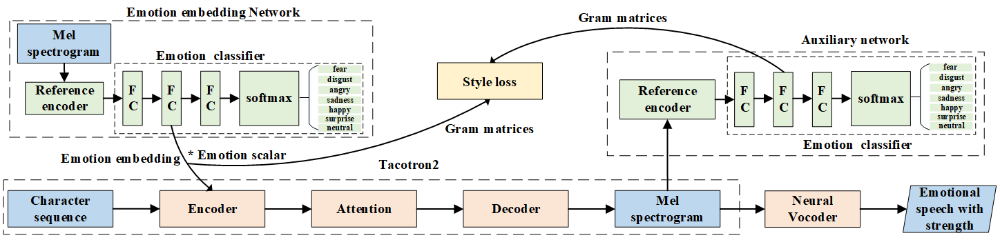

CONTROLLABLE EMOTION TRANSFER FOR END-TO-END SPEECH SYNTHESIS
Abstract
Emotion embedding space learned from references is a straightforward approach for emotion transfer in encoder-decoder structured emotional TTS systems. However, the transferred emotion in the synthetic speech is not accurate and expressive enough with emotion category confusions. Moreover, it is hard to select an appropriate reference to deliver desired emotion strength. To solve these problems, we propose a novel approach based on Tacotron. First, we plug two emotion classifiers -- one after the reference encoder, one after the decoder output -- to enhance the emotion-discriminative ability of the emotion embedding and the predicted mel-spectrum. Second, we adopt style loss to measure the difference between the generated and reference mel-spectrum. The emotion strength in the synthetic speech can be controlled by adjusting the value of the emotion embedding as the emotion embedding can be viewed as the feature map of the mel-spectrum. Experiments on emotion transfer and strength control have shown that the synthetic speech of the proposed method is more accurate and expressive with less emotion category confusions and the control of emotion strength is more salient to listeners.

1. Style transfer:
让那些小主顾们等一等到吧
emotion
Reference audio
Prosody Tacotron
Add emotion embedding network
Add auxiliary network
Add emotion embedding network and auxiliary network